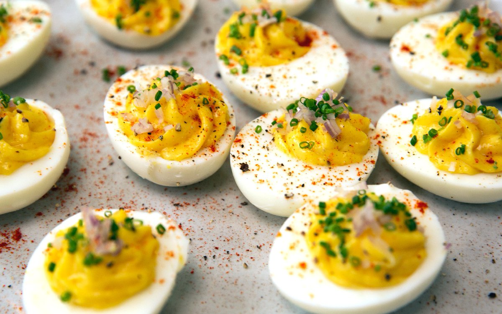

Deviled Eggs
Deviled eggs (also known as stuffed eggs, Russian eggs, or dressed eggs) are hard-boiled eggs that have been shelled, cut in half, and filled with a paste made from the egg yolks mixed with other ingredients such as mayonnaise and mustard.
ingredients
- 8 eggs
- 1/2 teaspoon prepared mustard
- 1 tablespoon of mayonnaise or as needed
- salt and pepper to taste
- 1 inch paprika
Directions
- Place eggs in saucepan and cover with water. Bring to boil. Cover, remove from heat, and let eggs sit in hot water for 10 to 12 minutes. Remove from hot water and cool in ice water.
- Peel and cut in half lengthwise. Remove yolks and combine with mustard, salad dressing and salt and pepper. Mix together until smooth.
- Refill each egg half with the yolk mixture and sprinkle with paprika.
Back to Top
Homepage